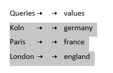
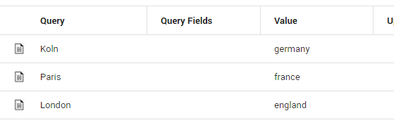
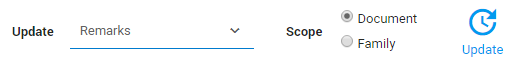
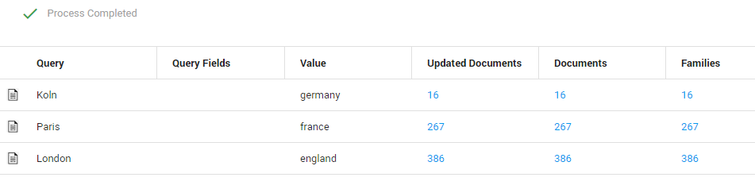

Create your queries in a spreadsheet (such as Excel) or a text document (such as Word).
-
When using a spreadsheet, leave an empty column between the queries and assigned values.

-
When using a text document, leave two tabs between the queries and assigned values.

Copy and paste the queries and their assigned values into Batch Search. The assigned values will be added to the Value column.

Click Search.

For each query a number of documents/families will be found. For example, the query "koln" returns 16 found documents. These documents can be updated with the value "germany". This value will be added to a selected field. The value "france" will be added to documents found with the query "paris".

Select a field from the dropdown listbox. For example, the field Remarks.

Select the Scope:
-
Document: Only the found documents.
-
Family: The found documents plus related documents (for example, all documents from an email conversation).
Click Update.
Click OK.
The values are added to the field Remarks.
